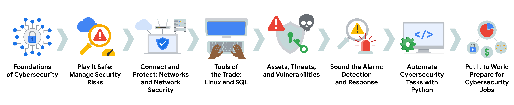

Presentacion
Este programa se compone en el aprendisaje del area de la siberseguridad, en el cual se aprende a proteger la informacion de los usuarios y de las empresas. Aprendera temas como:
- Conceptos basicos de la ciberseguridad
- Dominios de Seguridad
- Seguridad de la red
- Conceptos basicos de computacion
- Hardware
- Software
- Sistemas operativos (Linux y Windows)
- Comprender los Activos de la Informacion
- Las amenazas y las vulnerabilidades
- Deteccion y respuesta a incidentes
- Uso de lenguajes de programacion como Python 
La certificacion de Google Cybersecurity Certificate es un programa de 8 cursos que se enfoca en la seguridad de la informacion y la proteccion de los sistemas.
- Fundamentos de la Ciberseguridad: Explore la profesión de la ciberseguridad, incluidos los acontecimientos significativos que condujeron al desarrollo del campo de la ciberseguridad y su continua importancia para las operaciones de las organizaciones. Conozca las funciones y responsabilidades de la ciberseguridad a nivel de principiante.
- Juegue sobre seguro: Gestione los riesgos de seguridad: Identifique cómo los profesionales de la ciberseguridad utilizan los marcos y controles para proteger las operaciones empresariales y explore las herramientas comunes de ciberseguridad.
- Conectar y Proteger: Redes y Seguridad de red:Conozca las vulnerabilidades a nivel de red y cómo proteger las redes.
- Herramientas del oficio: Linux y SQL: Explore los conocimientos básicos de informática, incluida la comunicación con el sistema operativo Linux a través de la línea de comandos y la consulta de bases de datos con SQL.
- Activos, amenazas y vulnerabilidades: Conozca la importancia de los Controles de seguridad y el desarrollo de una mentalidad de Agente de amenaza para proteger y defender los recursos de una organización frente a diversas amenazas, riesgos y vulnerabilidades.
- Haga sonar la alarma: Detección y Respuesta: Comprenda el ciclo de vida de la respuesta ante incidentes y practique el uso de herramientas para detectar y responder a incidentes de ciberseguridad.
- Automatice las tareas de ciberseguridad con Python: Explore el lenguaje de programación Python y escriba código para automatizar las tareas de ciberseguridad.
- Póngalo en práctica: Prepárese para trabajos de ciberseguridad: Aprenda sobre clasificación de incidentes, escalado de incidentes y formas de comunicarse con las partes interesadas. Este curso cierra el Programa con consejos sobre cómo comprometerse con la comunidad de la ciberseguridad y prepararse para la búsqueda de empleo.